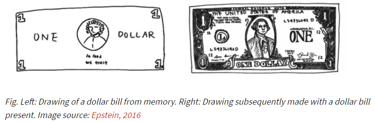

Contrastive Learning 笔记
参考资料：
- https://lilianweng.github.io/lil-log/2021/05/31/contrastive-representation-learning.html
- https://ankeshanand.com/blog/2020/01/26/contrative-self-supervised-learning.html
- https://zhuanlan.zhihu.com/p/334732028
- https://zhuanlan.zhihu.com/p/367290573
- https://zhuanlan.zhihu.com/p/368678302
论文引用见文末。
1. Motivations
1.1 纯监督学习的弊端
- 数据潜在的结构难以通过少量的labels来描述，因而purely supervised learning需要大量样本来学习，同时容易收敛到特殊情况；
- 模型为针对task-specific，所学的并非可重用的知识。
1.2 NLP领域预训练模型的进展
NLP领域如Bert预训练模型，从海量无标注文本中学习通用知识的能力。而CV领域的预训练，常为有监督，在ImageNet上预训练，但在下游任务中Fine-tuning的效果远不如NLP预训练模型来得显著。那，CV领域，能不能类似的，“充分使用越来越大量的无标注数据，使用越来越复杂的模型，采用自监督预训练模式，来从中吸取图像本身的先验知识分布，在下游任务中通过Fine-tuning，来把预训练过程习得的知识，迁移给并提升下游任务的效果。”
1.3 Toy Example

左图是人们根据记忆草绘的钞票，抽象程度较高，右图则是人们对着钞票临摹的结果，是接近像素级别的绘制。
尽管无数次看到一美元钞票，人们无法复刻它的全部细节。但是，根据脑中的印象，我们能轻松地把它与其他对象区分。类似地，我们能否构建不关注像素级细节，只编码足以区分不同对象的高级特征的表示学习算法？
2. Brief Introduction
2.1 Goal
Contrastive Learning的目标是学习这样一个嵌入空间，其中相似的样本对彼此靠近而不同的样本对相距很远，所得的编码器及嵌入为下游任务所用。
正式地，有：
与supervised learning对比，直观地可见下图：
2.2 Basic model architecture
主要包括如下三步：
- 对样本\(X\)，进行data augmentation，得到正样例\(V\)，而其他样本的样例则作为本样本的负例\(V'\)；
- 使用encoder得到样例的嵌入表示\(Y\)；
- 基于对比学习的\(Loss\)进行参数更新。
3. Key Ingredients
3.1 Loss Design
Loss的设计、发展详见Trend of training objectives
从形式上的发展来说，损失函数从早期仅对一个正负样例对进行学习，逐渐向考虑多个正负样例对发展；
此外，也有工作跳出self-supervised，将label信息也考虑入模型[9]；
从核心来说，好的损失函数应具备Alignment和Uniformity[1]：
所谓“Alignment”，指的是相似的例子，也就是正例，映射到单位超球面后，应该有接近的特征，也即是说，在超球面上距离比较近；所谓“Uniformity”，指的是系统应该倾向在特征里保留尽可能多的信息，这等价于使得映射到单位超球面的特征，尽可能均匀地分布在球面上，分布得越均匀，意味着保留的信息越充分。Uniformity特性的极端反例，是所有数据映射到单位超球面同一个点上，即模型坍塌（Collapse），如下图：
3.2 Data Augmentation
给定一个训练样本，需要通过数据增强获取正负样例。合理的数据增强设置对于学习good and generalizable的嵌入表示至关重要。例如，SimCLR[2] 实验表明，随机裁剪和随机颜色失真的组合对于学习图像视觉表示的良好性能至关重要。
3.3 Large Batch Size
只有当批量足够大时，损失函数才能覆盖足够多样化的负样本集合，让模型学习有意义的表示以区分不同的示例。但由于硬件的限制，如何让模型能支持更大batch size，需要进一步地考量模型反向传播的方式。
研究有如[3]：
4. CL + GNN
目前CL和GNN结合的工作[4-8]，主要是将CL的SOTA模型应用到GNN领域，模型架构上无太大创新。
迁移的主要难点，在于两个领域的输入不同，故CL+GNN的工作，主要创新在于如何对图数据进行augmentation，得到正负样例。
其扩增的方法归类如下：
Reference:
- Understanding Contrastive Representation Learning through Alignment and Uniformity on the Hypersphere
- A Simple Framework for Contrastive Learning of Visual Representations
- Momentum Contrast for Unsupervised Visual Representation Learning
- Contrastive multi-view representation learning on graphs
- Gcc: Graph contrastive coding for graph neural network pre-training
- Deep Graph Infomax
- Graph contrastive learning with augmentations
- Graph contrastive learning with adaptive augmentation
- Supervised contrastive learning